One connected security response workflow
Each flow below pairs the Mobbin reference with the revised Wisesama screen. The references inform the layout and interaction; Wisesama keeps its own branding and security model.
This review prototype uses sample inventory, historical advisories, simulated assessments and simulated email delivery. It has no backend connection.
Select any image to inspect the full-size capture.
Create the project context
A focused form keeps project labels, controls and the next step together.

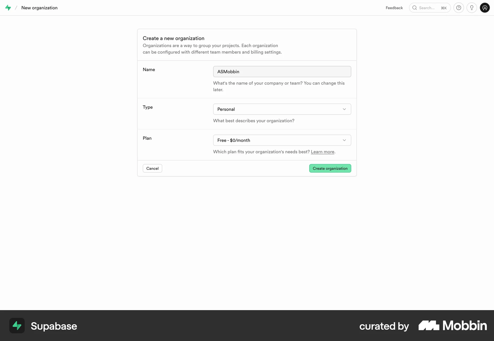

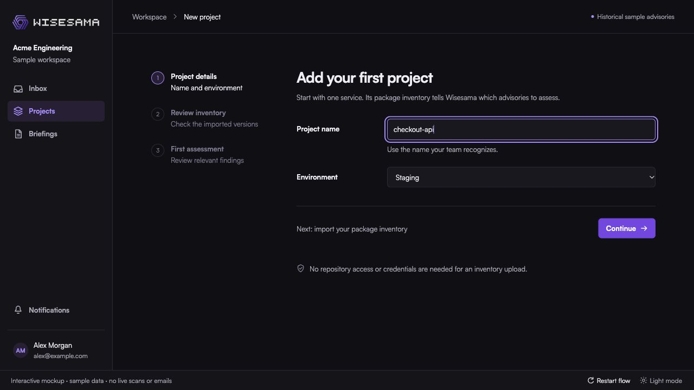
Review before creating
Review the imported data before committing, with a clear way back and one action to continue.

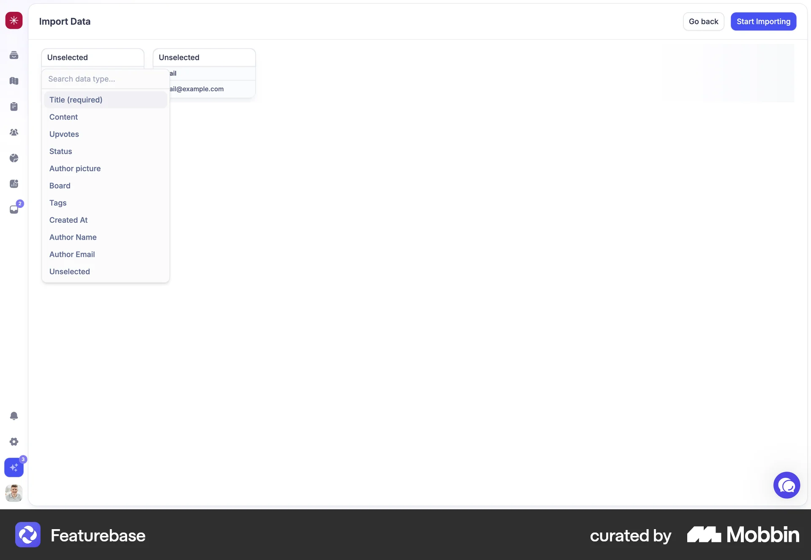

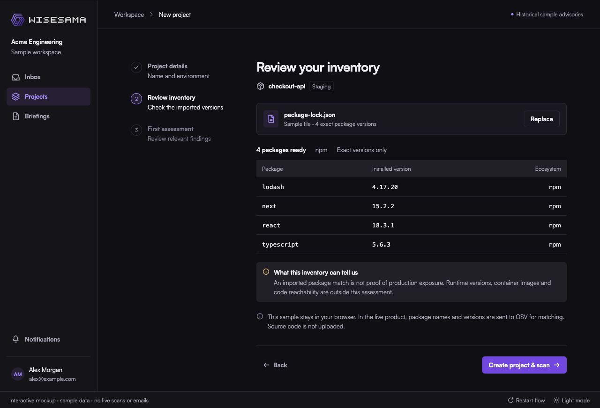
Triage a compact queue
Filters sit above compact rows, and opening a row leads to the full finding.

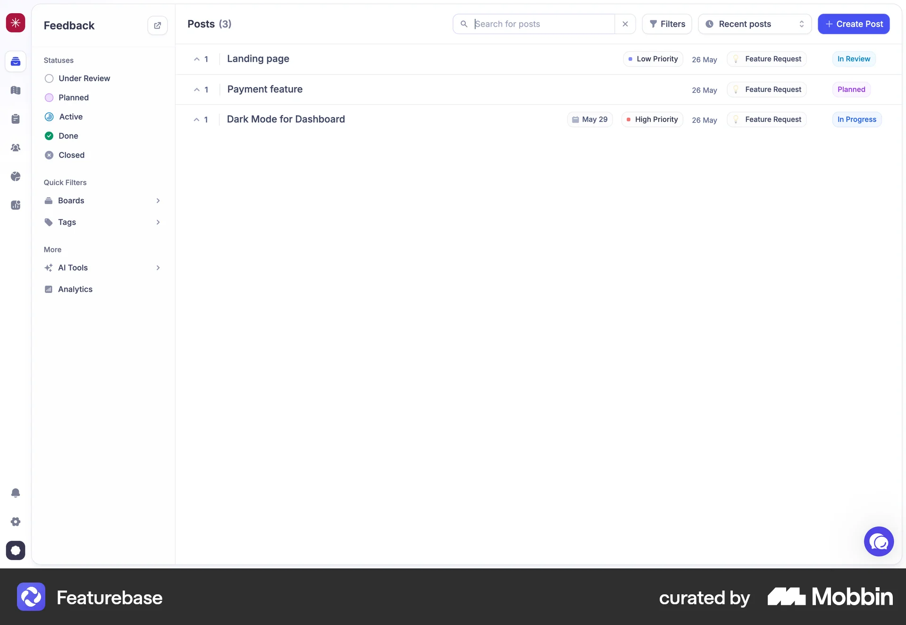

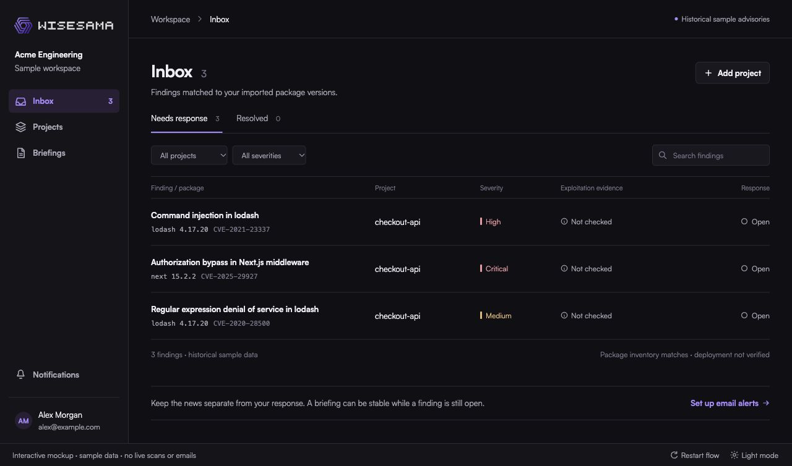
The same inbox in both themes
Layout, hierarchy and response controls stay consistent.

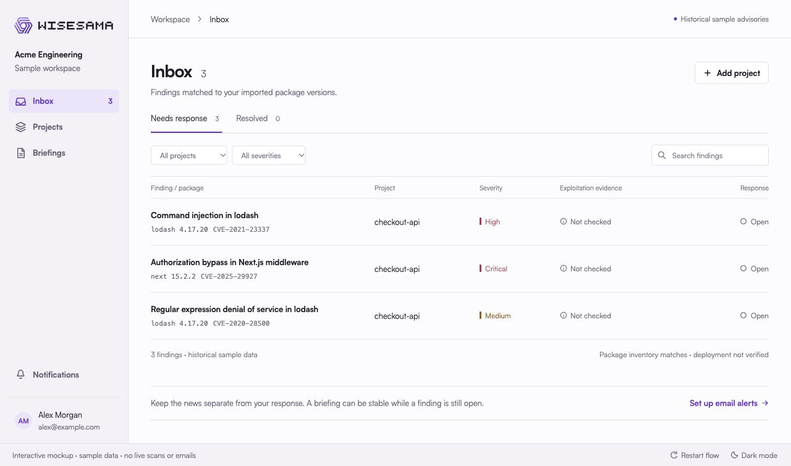
Give the finding a full page
The explanation and activity stay in the main column; severity, exploitation and response stay in separate properties.

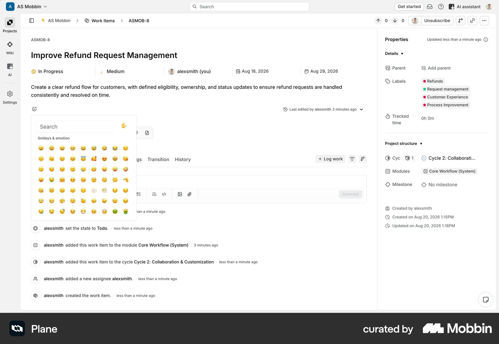

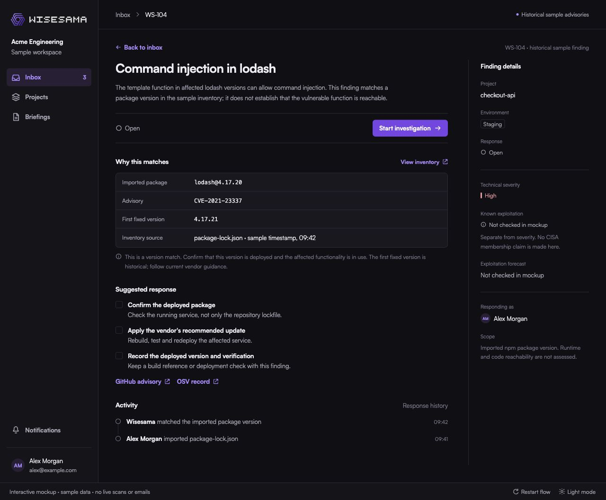
Record the response and keep its history
Resolution appears in the queue and activity history, with a clear way to reopen the finding.

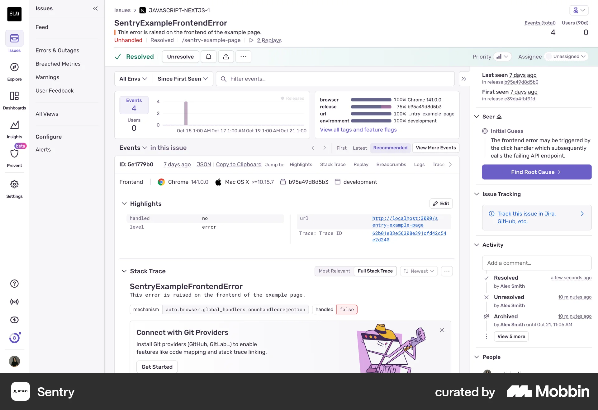

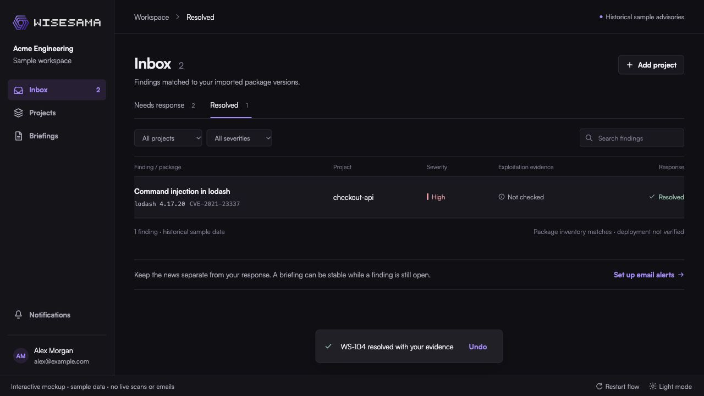
Requiring resolution evidence is a Wisesama product decision. Closure is user attested; it does not claim an independently verified deployment.
Make alert delivery explicit
Keep the alert condition and email channel together, with an explicit opt-in.

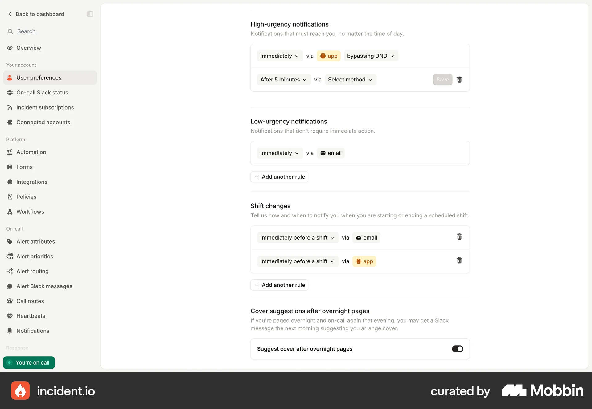

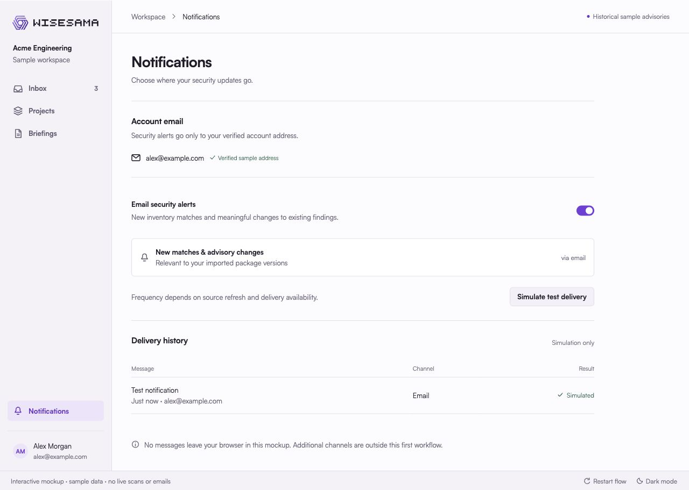